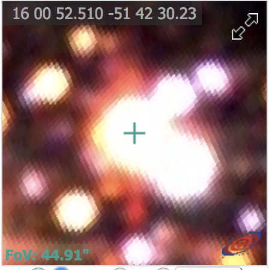
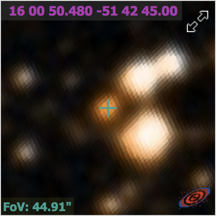

Thought to be progenitors of Type 1bc supernovae and long gamma-ray bursts
WR colliding wind binaries (eg WR+OI) produce dust in a 'pinwheel' spiral, like WR 104. Spiral evolution encodes binary parameters.
Gaia Optical color-magnitude diagram
Gaia NIR color-magnitude diagram
Not a reddening sequence?
Why is the astrometry so bad? Binarity?
2MASS, DSS, XMM
 Expected 10 pix expansion from wind spectra P Cygni profile (3400 km/s)!
... and Majaess 170 isn't even a cluster!